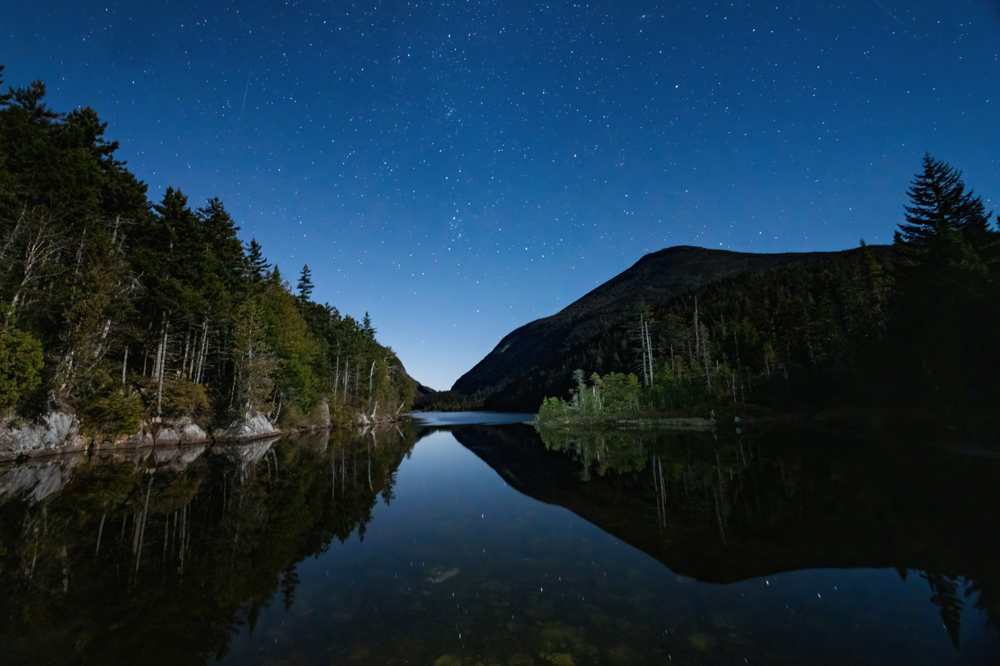
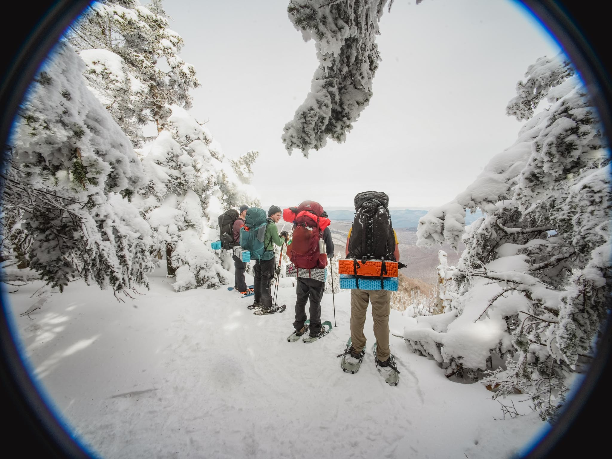
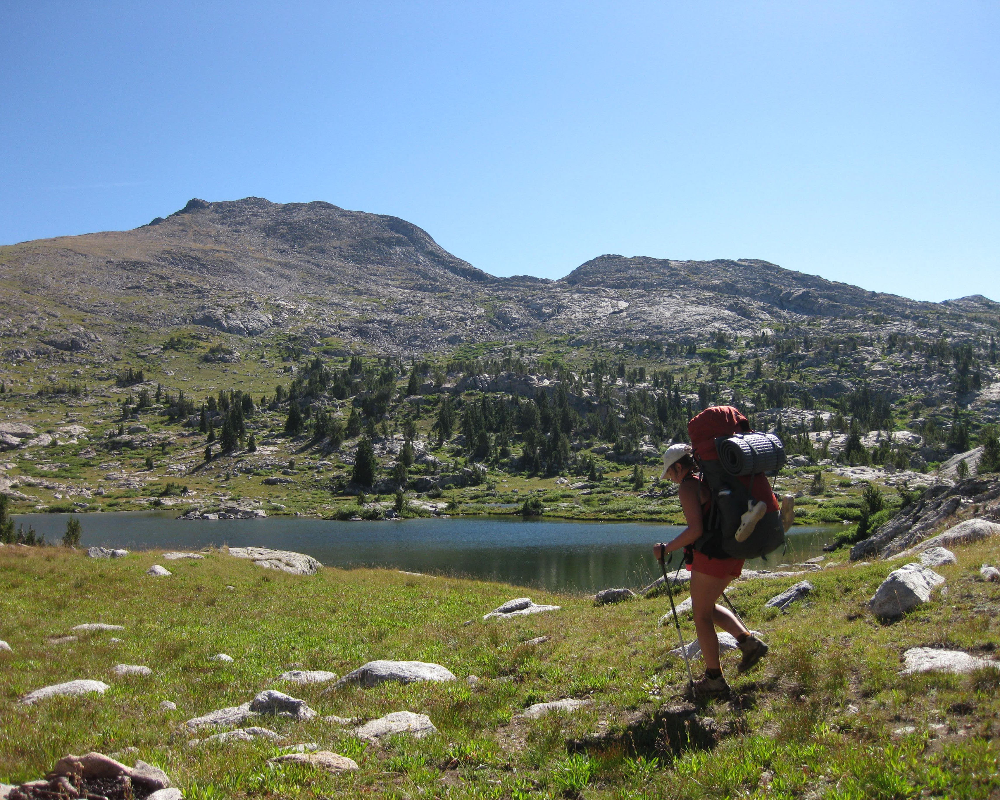
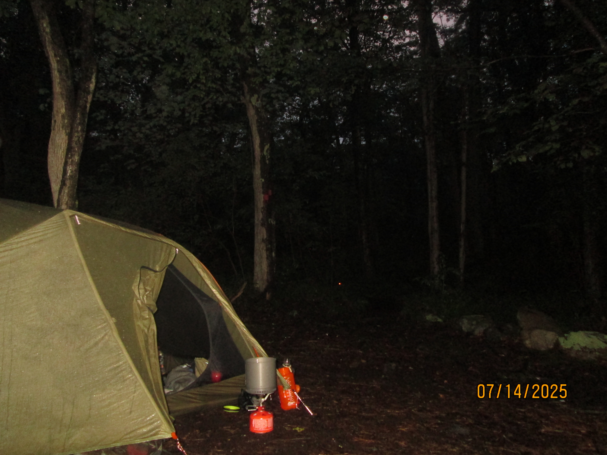

Latest Adventures
Shenandoah National Park, Sept. 12th-14th, 2025
We headed south of the Mason-Dixon line to check out Shenandoah National Park. Having left on Friday afternoon just after everyone's last class of the day, we arrived at the trailhead after dark. We hiked in about 5 miles and found camp near a waterfall to supply water in the morning for breakfast.
Day one on trail took us through the backcountry of Shenandoah as well as some intersections of Skyline Drive where we had some great views of the ridgelines. We ended the day tired and hot with 12 miles and about 2k feet of elevation under our belts. We found camp near a stream, settled in for the night, and made mashed potatoes and gravy.
Day two brought us shorter miles but about the same amount of elevation. We crossed streams, boulder fields, and climbed up to Chimney Rock. The last few miles were switchbacks downhill until we arrived back at the car.
I loved the technical terrain in Shenandoah, mixture of vegetation, and thick forest. Hope to be back soon (with a bug head net)!

The Adirondacks, Oct. 2024
One of the best trips I’ve packed, with great weather overall and challenging terrain. We summited Mt. Marcy, danced on the peak, and made it down before snow rolled in.

The Catskills, Feb. 2025
The weather conditions of this trip were the most intense I have experienced. Temperatures were below 15º during the day and dipping lower at night. We snowshoed the tallest peak in the range via the Wittenberg-Cornell-Slide trail.

The Winds, Aug. 2022
I backpacked 110 miles over 21 days in the Wind River Range with the National Outdoor Leadership School. The scenery was insane, the weather was always unpredictable, and I made the best friends of my life.
Gear Review
The REI Quarter Dome absolutely kills it on backpacking trips. Fit for one person or two (cozy), it’s a lightweight alternative to other backpacking tents. It’s best to be used as a three-season tent with warmer sleeping systems and layers in colder nights. I’ve found the ventilation to be very good in warmer nights and its almost full mesh upper of the interior adds great air flow. The rain fly blocks most heavier winds and the breathability prevents condensation on the inside.
